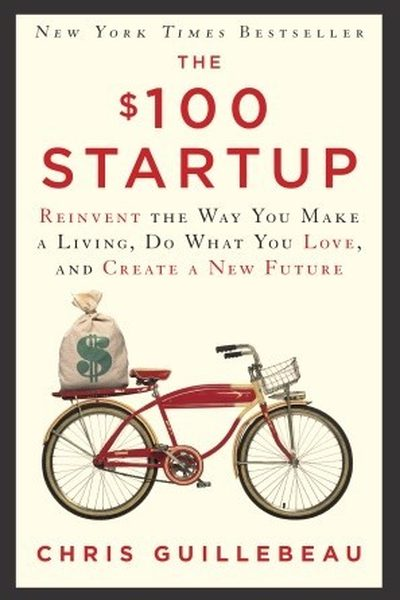

Library › Business & Startups
The $100 Startup — Summary & Key Lessons

Reinvent the way you make a living, do what you love, and create a new future — from 1,500 businesses that started with almost nothing.
📖 OPEN THE FULL INTERACTIVE BREAKDOWN →🌐 Read it in Hindi, Hinglish, Gujarati, Tamil & 22 more languages — free, with audio.
💡 The Big Idea
Chris Guillebeau studied 1,500+ successful micro-businesses started with less than $100 and found a pattern: ordinary people with a skill and a customer need built real incomes without loans, investors or business plans. His formula: find the intersection of what you love + what you're good at + what people will pay for (his 'passion + skill + market' framework), then create a simple offer, price it, and start selling TODAY. The book is a manifesto against the 'someday' — most of these founders launched in weeks, not years.
🧠 The 6 Key Lessons
Lesson 1: The $100 Start: Funding Is an Excuse
The Promise
Guillebeau's data: most of the 1,500+ businesses he studied started with under $100 — because the modern economy (digital tools, freelancing, shipping) makes starting nearly free. The 'I need funding' story is usually fear in disguise. What the founders actually had: a skill, a customer, and the nerve to start — none of which cost money.
📖 Example: The book's examples run from a London tour guide earning $2,000/month with a $30 website to a Texas guitar teacher charging $75/hour with zero overhead. The pattern: useful skill + direct customer + low cost = business. Read the full example →
⚡ Do this: List your skills and one person who'd pay for one of them. What's the smallest offer you could launch this week for under ₹2,000?
Lesson 2: Passion + Skill + Market = The Sweet Spot
The Promise
Guillebeau's core framework: the ideal business sits at the intersection of what you love (passion), what you're good at (skill), and what people will pay for (market). Missing any one and it fails: passion without skill disappoints, skill without passion burns out, both without market starves. His practical note: start with skill + market, and let passion grow.
📖 Example: Guillebeau's own story: he loved travel and writing, had skills in both, and found the market in 'how to travel well' — his site became a six-figure business. His interviewees' common answer to 'how did you start?' was: I just did it — imperfectly,… Read the full example →
⚡ Do this: Draw the three circles (passion, skill, market) and list what's in each. Where do at least two overlap? That's your starting point — not the perfect plan.
Lesson 3: An Offer They Can't Refuse: Solve One Problem Well
The Offer
The $100 founders succeeded with simple, specific offers: one service, one product, one clear promise. Guillebeau's formula: identify one painful problem for one specific group, then create an offer that solves it clearly — 'I help X do Y within Z time.' The narrower the offer, the easier to sell; the clearer the promise, the easier to price.
📖 Example: His case studies: a woman who turned 'I'm great at organizing kitchens' into a paid service; a man who offered 'I'll fix your computer while you watch' for nervous seniors. Specific audience + specific outcome beat 'I do marketing/consulting/whatever' every… Read the full example →
⚡ Do this: Write your offer in one line: 'I help [specific person] achieve [specific outcome] by [specific method].' Shorten it until a stranger gets it instantly.
Lesson 4: Price on Value, Not Time
The Product
Guillebeau's pricing rule: charge for the VALUE you deliver, not the hours you spend. A ₹50,000 solution that saves the customer ₹5 lakh is underpriced at ₹50,000 — and a ₹1,000/hour rate punishes you for being efficient. The founders' edge: they priced on outcome and didn't apologize — and their customers happily paid, because the value was real.
📖 Example: The book's math lessons: the guitar teacher charging $75/hour was paid for results, not minutes; the copywriter charging per-project made more than per-word colleagues. Guillebeau's advice: raise your price until customers hesitate — then nudge once more. Read the full example →
⚡ Do this: Price your next offer by the customer's value, not your hours. If you're unsure, double your current rate for one new customer and see what happens.
Lesson 5: Ship It: Perfection Is Procrastination's Best Friend
The Launch
The $100 founders' shared trait: they shipped quickly and improved in public. Guillebeau's rule: 'Your first product will be imperfect — ship it anyway.' Feedback from real customers beats months of polish in the garage. The book's launch strategy is gloriously simple: tell 10 people who might care, ask them to tell 10 more, and iterate on what sells.
📖 Example: Nearly every founder in the book launched with a 'good enough' version — the tour guide's first website was one page; the teacher's first ad was a flyer. Each improved with customer feedback, and the businesses grew with them. Read the full example →
⚡ Do this: Pick one offer and give it a 7-day shipping deadline. Tell 10 specific people this week. Improve based on the first 3 responses.
Lesson 6: Start With a Skill, Not a Business Plan
The $100 Startup
Guillebeau's research of hundreds of small businesses: the successful ones almost never began with a formal plan — they began with a skill or passion someone would pay for, tested small, and grew through feedback. You don't need a million-dollar idea; you need a useful skill and one willing customer. Small, tested, alive beats grand, planned, theoretical.
📖 Example: Guillebeau profiles people who turned niche skills — teaching kite-surfing, repairing appliances, making specialty food — into thriving businesses with minimal capital. Each started by offering something concrete to real people, not by writing a business plan. Read the full example →
⚡ Do this: List your top three marketable skills and ask one person this week if they'd pay for the first; start with the yes.
✅ 5-Step Action Plan
- Find skill + market overlap; design the smallest offer you can launch under ₹2,000.
- Draw your passion/skill/market circles and locate your start.
- Write your one-line offer — specific person, outcome, method.
- Price by value, not hours — and raise it until they hesitate.
- Ship a good-enough version within 7 days; improve in public.
⚠️ When This Doesn't Work
Guillebeau's 'start with $100 and what you know' is the most accessible business book ever — and Jawbone is the reminder that small starts can compound into big traps: Jawbone began exactly as the book prescribes — a tiny speaker project, bootstrap creativity — and grew into a $3 billion valuation and then a slow, painful liquidation, because the $100-startup mindset never upgraded into the discipline that scale demands — supply chains, quality, cash. Start small, yes; the book underweights that surviving scale is a different, harder book. Small beginnings need big endings.
💀 The Graveyard Proves It
🎽 Jawbone — $3.2B Wearables Pioneer, Bled Out by Its Own Returns. Burn: $930M raised → liquidation. Read the full case study →
💬 Best Quotes from The $100 Startup
- “The future belongs to those who take the initiative.”
- “You don't need a business plan. You need a product and a customer.”
- “Start small, start now — but start.”
Interactive version: mark lessons as read, listen in your language, share quote cards.